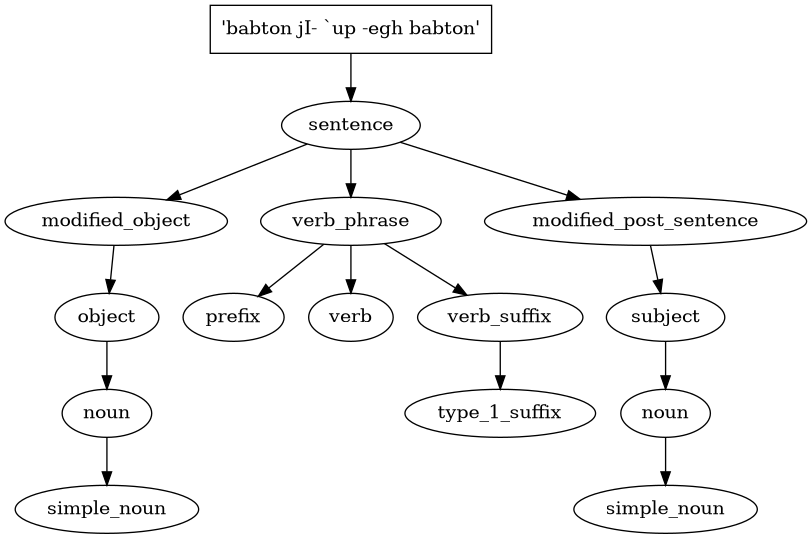

About Me

Hello! I’m Arin, a Computer Engineering student at UC Santa Cruz. I am passionate about building impactful software and solving complex problems with innovative solutions.
Experience
- The Difference LLC - Full Stack Intern: Built responsive front ends with React, TypeScript, and Tailwind CSS. Streamlined Flutter app state management using Riverpod, reducing search latency by 70%. Enhanced Laravel back-end functionality, ensuring seamless database migrations and API integrations.
- Academic Projects: Developed a Dino Game in SystemVerilog with advanced FSMs, timers, and ROM implementation for smooth VGA rendering. Designed a Klingon Parser leveraging Lark to process Klingon grammar and generate structured outputs and tree visualizations.
Projects
- BingeFlix: A unified streaming platform search tool. I built the back end to aggregate movie availability from multiple APIs and crafted a user-friendly front end for streamlined searches.
- Dino Game: A functional dinosaur runner game implemented in SystemVerilog and programmed onto an FPGA. It features pixel-perfect graphics rendered through a VGA interface and uses timers for obstacle spawning and score tracking.
- Image Classification Model: Leveraged PyTorch to build and train deep learning models for image classification tasks. Achieved high accuracy by optimizing hyperparameters and using advanced data augmentation techniques.
-
Klingon Parser: Parsed Klingon grammar and vocabulary into structured outputs using
the Lark library. Added a tree visualization feature to illustrate sentence structures effectively.
Below is an example of the Klingon Parser output:
